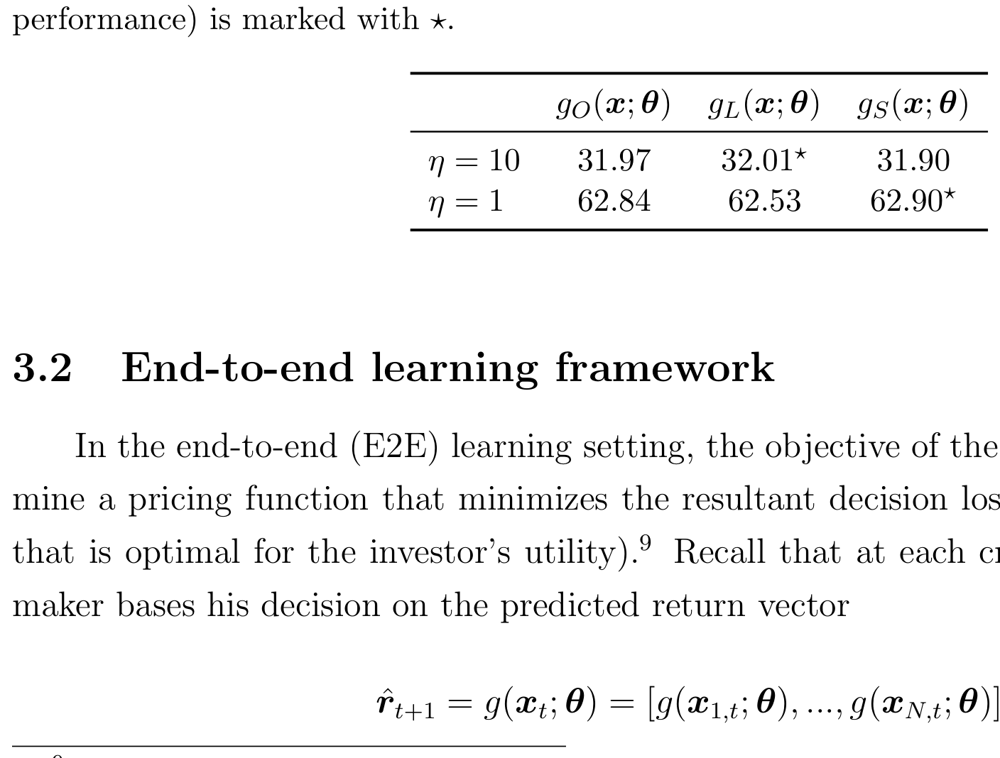
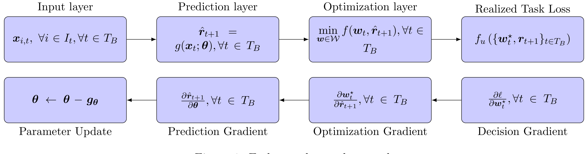
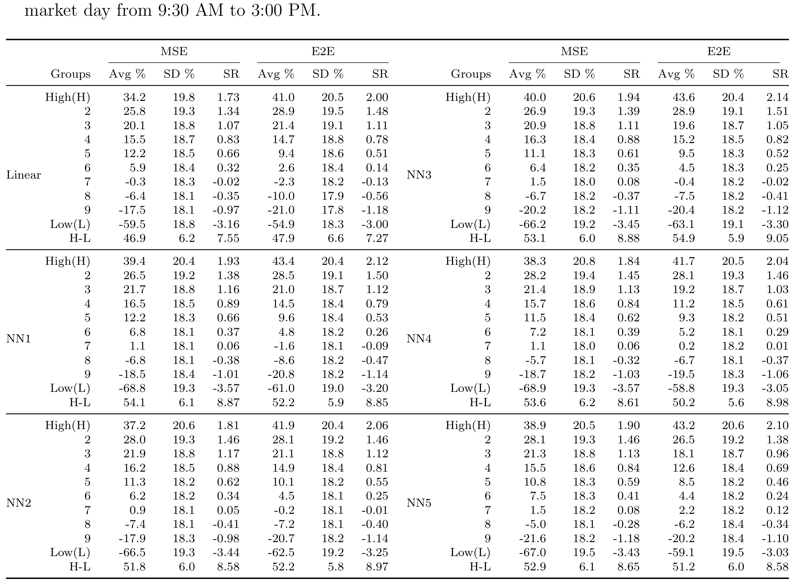
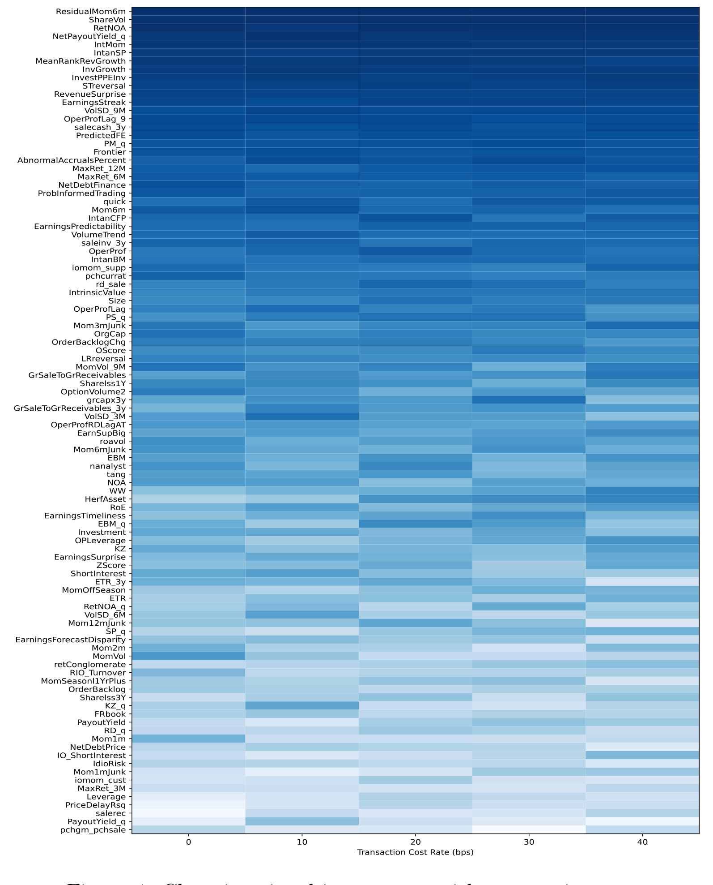
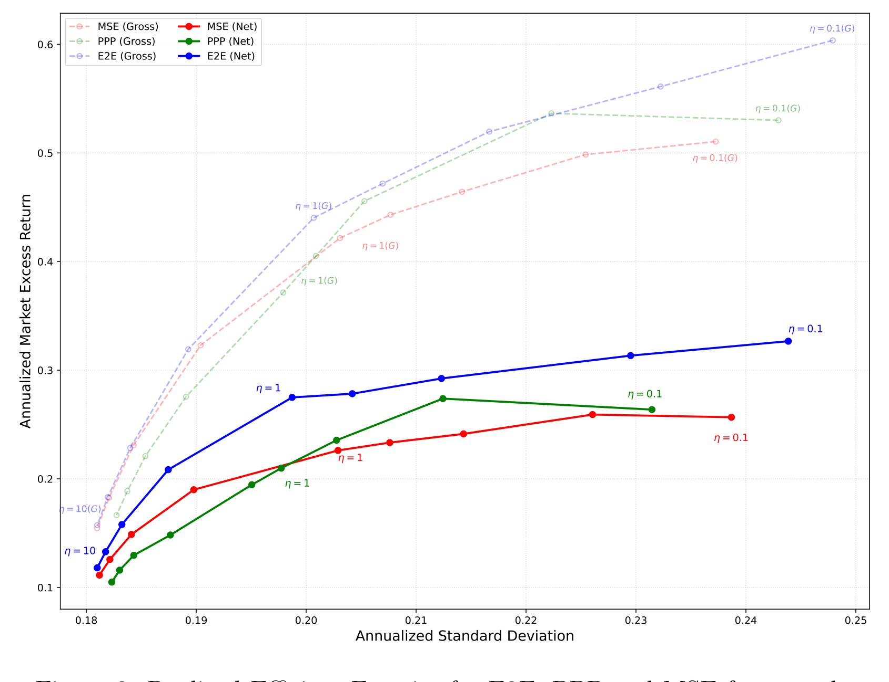
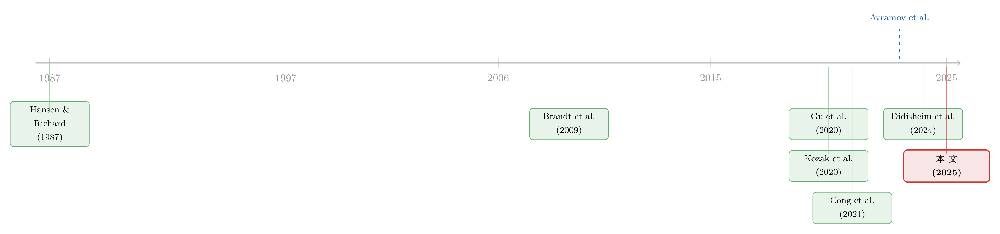

把优化器塞进神经网络：当机器学习撞上 Markowitz
本文读的是 Wang, Gao, Harvey, Liu & Tao (2025, SSRN)：标准的「先预测、再优化」两步法有一个隐藏的病灶——第一步用均方误差去拟合收益，把所有股票的预测误差一视同仁，可投资者真正在意的，从来不是「平均预测得多准」，而是「在我组合里权重最大的那几只股票上预测得多准」。作者把组合优化器直接嵌进神经网络，做成一个端到端 (end-to-end, E2E) 的学习框架，让预测和优化在同一个目标下一起训练。结果是：每个投资者都长出了一条属于自己的、内生的有效前沿。
1 一道被我们习以为常的「裂缝」
做量化组合的人，几乎都默认了一套流程：第一步，搭一个横截面预测模型，把下一期的股票收益 \(\hat\mu\) 估出来，顺手再估一个协方差矩阵 \(\Sigma\)；第二步，把这两样东西塞进一个均值-方差优化器，解出组合权重。预测归预测，优化归优化，分工明确，各司其职。这套「预测-然后-优化」(predict-then-optimize) 的范式如此自然，以至于我们很少停下来问一句：这两步，真的应该分开吗？
先把第一步看清楚。绝大多数预测模型——无论是线性回归还是花哨的神经网络——衡量好坏的标准都是均方误差 (mean squared error, MSE)。MSE 有一个我们平时不会多想、但其实非常强的隐含假设：它把每一只股票的预测误差，都看得一样重。多预测错了茅台一个点，和多预测错了某只微盘股一个点，在 MSE 的账本里，扣的分是相同的。于是，对于给定的预测模型，所有投资者拿到的，是同一份「一刀切」(one-size-fits-all) 的收益预测。
可问题恰恰在这里。一个高度集中、风险偏好极高的对冲基金，和一个高度分散、厌恶风险的养老金，他们的组合长得天差地别。对冲基金可能把身家压在少数几只高信念的股票上，那么模型在这几只股票上预测得准不准，几乎决定了它的生死；而那些它压根不会重仓的股票，预测得再准，对它也意义寥寥。换句话说——
投资者愿意牺牲一点全局的横截面 \(R^2\)，去换取那几只「对我最重要」的股票上的预测精度。
这就是全文反复要讲透的那一个核心：第一步的统计目标 (MSE) 和第二步的决策目标 (组合权重背后的效用)，本质上是错位的。沿着一个统计意义上「最优」的方向去拟合，落到具体投资者的真实效用上，往往是次优的。作者把这道裂缝的成因，拆成了三个互相叠加的来源：忽视了异质的投资者偏好、忽视了真实世界的约束（如卖空限制）、忽视了交易成本。三者叠在一起，让「预测准」和「赚得到」之间的鸿沟越来越宽。
2 一个四资产的「玩具」，先把直觉砸实
在搬出几百万条数据之前，作者先用一个极小的例子把道理讲明白。设想只有四只资产，一个投资者要在其中配置。如果你的目标是最大化最终实现的效用 (realized utility)，那么「把有限的模型自由度，省下来用在那些你最可能重仓的资产上」就会带来实打实的收益——哪怕这么做会让你在另外几只资产上预测得更差，全局 MSE 更难看。
如表 1 所示，在这个可控的小例子里，以实现效用为目标去训练的方案，系统性地跑赢了以 MSE 为目标的方案。麻雀虽小，它把「为什么要把优化器塞回预测里」这件事，干净利落地证了一遍。

Table 1: Realized utility (%) in four-asset example
接着，一个自然的问题是：道理我懂了，可怎么把「把优化器塞进预测」这件事，做成一个真正能跑、能上几百个特征、还能处理卖空限制和交易成本的系统？
3 识别策略：把优化器变成神经网络的一层
这就是这篇论文真正关键的一步。传统两步法里，优化器是训练之后才登场的——网络先学完，吐出 \(\hat\mu\)，再交给优化器。E2E 框架反其道而行：它把组合优化器本身，做成神经网络里的一层（一个可微凸优化层，differentiable convex optimization layer），让梯度可以穿过优化器、一路回传到预测网络的参数上。
于是整条链路变成了：原始特征 \(x\) → 神经网络生成预测 → 优化层解出组合权重 \(w^\star\) → 用 \(w^\star\) 撞上真实收益、算出实现效用 → 这个效用就是损失，反向传播回去。网络的参数不再是为了「让 \(\hat\mu\) 贴近真实收益」而训练，而是为了「让最终解出来的组合权重带来的效用最大」而训练。预测的目标，第一次和投资的目标，对齐了。

Figure 1: End-to-end neural network
要把这件事说精确，先写出第二步那个谁都认识的 Markowitz 程序。给定预测 \(\mu\) 和协方差 \(\Sigma\)，一个风险厌恶系数为 \(\gamma\) 的投资者，在约束集 \(\mathcal{C}\) 内求解：
约束集 \(\mathcal{C}\) 在这里不是摆设。作者往里塞进了三样真实世界的东西：只能做多 (\(w \ge 0\))、单只持仓上限（集中度约束）、以及交易成本惩罚。在中国 A 股这种卖空被严格限制的市场里，「只能做多」不是一个可选项，而是硬约束。
现在是 E2E 的核心。两步法把上面这个 \(w^\star\) 当成训练结束后的「后处理」；E2E 则把它当成一层，让网络的参数 \(\theta\) 直接去优化最终的实现效用：
$$ \min_{\theta}\; \frac{1}{T}\sum_{t}\Big[\frac{\gamma}{2}\, w_t^\star(\theta)^\top \Sigma_t\, w_t^\star(\theta) \;-\; w_t^\star(\theta)^\top r_{t+1}\Big] $$
$$ \text{s.t.}\quad w_t^\star(\theta) = \arg\max_{w\in\mathcal{C}}\; w^\top \hat\mu_t(\theta) \;-\; \frac{\gamma}{2}\, w^\top \Sigma_t\, w $$
注意这两行的微妙之处：下面那行里的预测 \(\hat\mu_t(\theta)\) 是网络的输出，它通过 \(\arg\max\) 决定了权重 \(w_t^\star(\theta)\)；上面那行的损失，又是用这个权重撞上真实的下一期收益 \(r_{t+1}\) 算出来的。\(\theta\) 的每一次更新，都是在问：「我该怎么调整对各只股票的预测，才能让最终解出来的组合，在真金白银的实现效用上更好？」这正是「machine learning meets Markowitz」这句话的全部含义——不是用机器学习把预测做得更准，而是把 Markowitz 的优化器，请进机器学习的训练回路里。
这套思路与作为对照组的参数化组合策略 (parametric portfolio policy, PPP) 形成了鲜明对比。Brandt et al. (2009) 的 PPP 同样是「决策导向」的，但它把权重直接写成特征的线性函数 \(w_{i,t} = \bar{w}_{i,t} + \frac{1}{N_t}\theta^\top x_{i,t}\)，绕过了显式的优化。这让 PPP 在追求收益时很灵活，却失去了精确控制方差的能力——这个区别，下文会变成一处漂亮的反转。
一个被忽略的技术难点：交易成本怎么训练
这里还藏着一个不起眼、却很要命的技术问题。训练机器学习模型时，我们默认每个「股票-时间」样本是相互独立的。可一旦把交易成本写进目标，麻烦来了：今天的换手成本，取决于今天的权重和昨天的权重之差——样本之间产生了时间依赖，独立性假设当场失效。作者为此提出了一种新的横截面采样方案，允许组合权重在时间上保持依赖，模拟出投资者真实的再平衡 (rebalancing) 过程。这是个工程细节，但正是这类细节，决定了一个框架是「停留在论文里的漂亮想法」还是「真能上线的工具」。
4 数据：用 A 股的「日频」把交易成本看清楚
作者的实证舞台是中国 A 股：5,489 只股票、2010 到 2023 年、大约六百万个股票-日观测、逾 415 个公司层面特征（从估值比率、动量、风险度量到盈利能力，应有尽有）。所有预测变量都严格做到实时可得：市场类信号只用到前一交易日收盘的数据，财报类基本面只在公告之后才纳入，没有前视偏差 (look-ahead bias)。模型用滚动窗口训练，每个四年窗口里 39 个月训练 + 9 个月验证，然后对接下来一个季度做样本外预测。
为什么是日频，而不是文献里常见的月频？因为只有在日频上，交易成本的校准才足够真实——高换手策略的成本，在月频数据里很容易被低估甚至看不见。这一点，恰恰是后面那个最有说服力的结果的舞台。
5 主要结果：三记重拳
第一记，关于「虚幻的 alpha」。 作者先老老实实跑了传统两步法的 MSE 模型。结果完全符合既有文献 (Gu et al., 2020; Leippold et al., 2022)：统计预测力强得惊人，一个多空组合的夏普比率 (Sharpe ratio) 能超过 9.0。但只要你凑近看一眼，就会发现这份惊艳几乎全部来自空头腿。而在卖空被严格限制的 A 股，这些空头收益根本无法实现——所谓的 alpha，大半是镜花水月。相比之下，E2E 框架从一开始就把「只能做多」写进了约束。在限定为可实现的纯多头组合后，E2E 在保持波动率相近的同时，显著提升了年化收益，且这一改进在所有模型设定下都统计显著。

Table 2: Portfolio performance of both MSE and E2E
第二记，关于交易成本。 这是我个人最喜欢的一段。作者逐步抬高交易成本，观察两种方法的反应。E2E 的表现像一个会随路况换挡的司机：成本一升，它就自动压低换手率、让交易行为变稳，始终守住正的净收益。而两步法的 MSE 模型，因为根本无法在训练时「感知」成本，只能死守那套高换手的信号——当交易成本升到 0.3% 时，它的收益迅速恶化，甚至转为负值。
更耐人寻味的是 E2E 实现这份韧性的机制：它会动态地重新分配「信号重要性」，系统性地调低那些高换手特征（比如短期反转）的权重，转而强调换手成本更低的因子。如图 4 所示，随着交易成本上升，模型对各类信号的倚重发生了清晰可见的迁移。这正是「把优化器塞进预测」的威力——成本不是事后扣掉的一笔账，而是从一开始就重塑了模型「该相信哪些信号」的判断。

Figure 4: Changing signal importance with transaction costs
第三记，也是落点最漂亮的一记：那条内生的有效前沿。 作者把 E2E 同时和 MSE、PPP 两个基准做对比，沿着整条风险偏好谱去扫。于是反转出现了：
- 对高风险容忍的投资者，决策导向的 PPP 靠着灵活捕捉高收益机会，跑赢了统计导向的 MSE；
- 可随着风险厌恶上升，PPP 缺少显式优化层的短板暴露无遗——它无法精确控制组合方差，于是反过来落后于 MSE；
- 而 E2E 在整条谱上同时压制了两个基准。对厌恶风险的投资者，它凭借显式优化层的结构精度，能收敛到最小方差组合；对偏好风险的投资者，它又借助类似 PPP 的决策感知能力，把收益顶上去。

Figure 2: Realized Efficient Frontier for E2E, PPP and MSE frameworks
如图 2 所示，三种框架各自画出了一条实现的有效前沿，而 E2E 的那条，把另外两条包在了里面。这把全文的核心推向了它最深的一层含义：每个投资者，都拥有一条属于自己的、内生决定的有效前沿——它取决于这个投资者的风险偏好、个体约束，以及他所面对的市场摩擦。一旦你接受「不同风险偏好的投资者，面对同样的特征，理应给出不同的估值」，那么「一份预测打天下」的旧范式，就站不住脚了。
6 文献脉络：从「条件有效」到「优化器进网络」
这条线的源头，要追到 Hansen and Richard (1987) 关于条件有效性 (conditional efficiency) 的奠基工作——他们最早提出，可以把投资者特征直接映射到组合权重上。沿着这条路，Brandt et al. (2009) 的 PPP 把权重写成特征的线性函数，开创了「决策导向、绕过预测」的一派。

另一条平行的线，是机器学习在资产定价里的大爆发。Gu et al. (2020) 用美股数据做了首批大规模实证，证明神经网络、提升树这些非线性模型在预测股票收益上系统性地胜过线性基准；随后这一发现被推广到欧洲 (Drobetz and Otto, 2021) 和中国 (Leippold et al., 2022) 市场。与此并行，Kozak et al. (2020) 把因子投资重新表述为在「因子动物园 (factor zoo)」里搜索随机贴现因子 (stochastic discount factor, SDF) 的权重，用收缩 (shrinkage) 直接估 SDF 系数（关于这条「收缩」的脉络，可参见《压缩横截面：因子动物园的尽头，不是更少的因子，而是更聪明的收缩》；以及因子动物园本身的来历，《弱替代：因子动物园是从哪里冒出来的？》）。Chen et al. (2024) 进一步把「无套利」条件直接写进损失函数，是「整合式学习」的范例；Didisheim et al. (2024) 则提出「复杂度的美德」，论证用海量预测变量的模型能渐近逼近最优切点组合。
但所有这些 SDF 方法，几乎都默认了一个无摩擦的市场。Avramov et al. (2023) 泼了一盆冷水：这些方法解出的切点组合往往要求极端杠杆或激进做空，对真实投资者根本不可行；而 ML 的收益预测能力，大量集中在微盘、困境股这些难以交易的角落，一旦把交易成本和经济约束算进去，利润便急剧缩水。
还有一条来自深度强化学习 (deep reinforcement learning, DRL) 的支流。Cong et al. (2021) 用 Transformer 把组合选择刻画成动态策略问题，是该方向的代表作；但因为难以对高维动作空间求策略梯度，它的最终权重是靠归一化一个「胜者分数」启发式地得到的，而非真正解一个带约束的优化问题——也就无法严格保证组合贴合投资者的效用与约束。
这篇论文，正好站在这几条线的交汇处：它接过 Hansen-Richard 与 Brandt 的「决策导向」衣钵，借用 Gu et al. 一脉的机器学习火力，又直面 Avramov et al. 提出的摩擦质疑——用一个可微优化层，把卖空限制、持仓上限、交易成本，全部请进训练回路。（在「让 ML 长出有效前沿」这个意象上，它和《把「排序」种成一棵树：P-Tree 如何长出有效前沿》是同道中人，只是路径迥异；而把 ML 预测做得可解释的努力，可参见《把机器学习的黑箱拆成玻璃箱：公司债收益率能被「看懂」地预测吗？》。）
7 评论与延伸（Q&A + 研究方向）
(a) 几个可能的疑问
Q：E2E 和「在 MSE 里给样本加权」到底有什么本质区别？
有人会说，不就是给重要的股票更高权重去拟合吗？区别在于这个权重是谁定的、何时定的。手工加权需要你事先知道哪些股票重要，可「哪些重要」恰恰取决于优化的结果——这是个循环。E2E 让梯度穿过优化层，把「该给谁更高精度」这件事内生地、端到端地学出来，而且它会随风险偏好、约束、成本一起变。这是手工加权或贝叶斯收缩做不到的。
Q：夏普比率超过 9.0，这数字是不是好得不真实？
正是作者想让你警惕的地方。这个夸张的夏普几乎全来自空头腿，而 A 股严格限制卖空，所以它根本不可实现。论文的态度很清醒：统计上的惊艳 ≠ 可落地的收益。这恰是「虚幻 alpha」(illusory alpha) 的典型——也是 Avramov et al. (2023) 一再强调的教训。
Q：把优化器塞进网络，会不会很难训练、很容易过拟合？
可微凸优化层确实让训练更重，作者也提出了新的采样方案来处理交易成本带来的时间依赖。但反过来看，显式的优化层和经济约束（只做多、持仓上限）本身就是一种强正则化——它把模型的自由度限制在「经济上合理」的范围内，Chen et al. (2024) 早就指出，没有经济结构约束的纯「厨房水槽」式深网，表现甚至不如简单模型。
Q：E2E 对厌恶风险的投资者能「收敛到最小方差组合」，这是优点还是退化？
是优点。它说明 E2E 没有为了追收益而牺牲风险控制：在风险厌恶极高的一端，它老老实实地退回到结构精确的最小方差解；在风险容忍的一端，又能像 PPP 那样把收益顶上去。一个框架同时占住了两个基准各自的强项，这正是图 2 里那条「包住别人」的前沿的来源。
Q：协方差矩阵 \(\Sigma\) 是怎么来的？会不会是短板？
作者坦承，他们的 ML 模型聚焦于生成均值预测（这也是资产定价文献的主要目标），协方差则用一个简单模型从历史已实现收益估计。也就是说，这篇论文的创新在「预测与优化的整合」，而非协方差估计本身——后者用的是相对朴素的办法，是个可以改进的方向。
Q：结果是在 A 股上得到的，能推广到美股或其他市场吗？
选 A 股有其道理：卖空限制硬、日频数据能真实校准交易成本，是检验「约束 + 成本」框架的好场子。但「只能做多」这条核心约束在美股就宽松得多，空头收益也更可实现，所以 E2E 相对 MSE 的优势幅度大概率会缩小。跨市场的外部有效性，需要进一步验证。
(b) 几个可能的研究问题与提案
1. 把 E2E 搬到公司债市场
【经济故事】公司债的横截面预测近年很热，但债券市场的摩擦比股票更狠：流动性差、买卖价差宽、大宗交易冲击大、很多券根本没法做空。一个「预测准但换手高」的债券策略，在真实交易成本下几乎注定亏钱——这正是 E2E「把成本写进训练」最该发光的地方。
【可行性】中。数据上 TRACE 提供成交价与交易量，可校准价差与冲击成本；难点在于债券协方差与流动性的建模远比股票复杂，且债券是分层的（同一发行人多只券）。识别上可对照「先预测后优化」的债券基准，比净收益与换手。Doable，但工程量不小。
2. 异质投资者的内生估值，与「谁在持有」
【经济故事】论文最深的一句话是「不同风险偏好的投资者，面对同样特征理应给出不同估值」。如果真是这样，那么一只债券或股票的持有人结构，就应该能预测它被如何定价。把 E2E 生成的「投资者专属估值」和真实的持有人画像对上，是个诱人的实证。
【可行性】中。需要投资者层面的持仓数据（如 13F、基金持仓、债券托管数据）。识别挑战在于把「估值差异源于偏好」和「源于信息」分开。可借需求体系类方法做桥接。
3. 外资持有人作为一种「约束异质性」
【经济故事】外资往往面对额外约束：投资范围限制、汇率对冲成本、监管上限。这本质上就是 E2E 框架里 \(\mathcal{C}\) 的另一种形态。给外资投资者配上他们专属的约束集，E2E 会内生地生成一条不同的有效前沿——这能解释为什么外资与本土资金的持仓和换手系统性地不同。
【可行性】中偏低。需要刻画特定外资类别的真实约束，且要把约束与偏好分离。识别上可利用监管额度变动（如各类互联互通的开闸）作为约束松紧的外生冲击。
4. 交易成本下的「信号迁移」能否预测市场层面的拥挤
【经济故事】图 4 显示，成本一升，E2E 就把权重从高换手信号迁向低换手因子。如果很多投资者同时这么做，是否会在市场层面造成某些因子的拥挤与另一些的冷落？这把个体的最优反应，连到了 Dou et al. (2025) 关心的总均衡含义上。
【可行性】低。需要把个体 E2E 智能体嵌入一个一般均衡环境，作者自己也明说这超出了本文范围。是个有野心但难做的方向。
5. 用 E2E 做基金筛选与费用管理
【经济故事】作者在结语里点了一句：业绩评估与基金选择，本质也是「面对一堆业绩信号、却只能选少数几只去配置」的约束优化问题。把基金当资产、把「选几只」当约束，E2E 是个天然的工具。
【可行性】中。数据上有基金业绩与特征（Morningstar、CRPS 基金库等）；识别上需对照传统的「先预测基金 alpha、再配置」两步法。相对 doable，是本文框架一个直接的外推。
我的判断
这篇论文最大的贡献，不在某个新模型有多炫，而在它把一个被我们习以为常的范式裂缝，讲清楚了、并堵上了：预测和优化的分离，是「先预测后优化」的原罪；MSE 的「一视同仁」与投资者的「厚此薄彼」之间，存在系统性的错位。把可微优化层请进训练回路，让卖空限制、持仓上限、交易成本从「事后扣除」变成「事前塑形」，这是一个既有概念高度、又有工程落地的贡献。那条「每个投资者一条内生前沿」的图景，尤其漂亮。
对识别，我有三点担忧。其一，协方差是短板：均值预测做得再精，组合优化也离不开 \(\Sigma\)，而本文用的是朴素的历史估计，这可能稀释了 E2E 的优势，也可能让对比对协方差设定敏感。其二，A 股的特殊性：靠「卖空受限 + 日频成本」撑起来的优势幅度，换到卖空更自由的市场会缩水多少，需要直接验证。其三，对比的公平性：E2E 天生为「带约束、带成本」的环境设计，而 MSE 基准在训练时无法感知成本——这场比较某种意义上是「为约束而生的选手」对「不知约束为何物的选手」，赢面本就偏向前者；更严格的检验，应让两步法也用上各种已知的去噪、收缩与成本控制手段，再比高下。
我接下来最想看到的，是把这套框架搬到公司债与信用市场——那里摩擦更重、流动性更差、可投资性约束更硬，正是 E2E「把摩擦写进学习」最该证明自己的战场（关于债市流动性的真实约束，可参见《谁在持有这张债券，决定了它的价格》）。如果在那样一个更不友好的环境里，E2E 依然能把「预测准」翻译成「赚得到」，这套范式才算真正立住了。
参考文献
- Avramov, D., Cheng, S., & Metzker, L. (2023). Machine learning vs. economic restrictions: Evidence from stock return predictability. Management Science 69(5), 2587–2619.
- Brandt, M. W., Santa-Clara, P., & Valkanov, R. (2009). Parametric portfolio policies: Exploiting characteristics in the cross-section of equity returns. Review of Financial Studies 22(9), 3411–3447.
- Chen, L., Pelger, M., & Zhu, J. (2024). Deep learning in asset pricing. Management Science 70(2), 714–750.
- Cong, L. W., Tang, K., Wang, J., & Zhang, Y. (2021). AlphaPortfolio: Direct construction through deep reinforcement learning and interpretable AI. Working Paper.
- DeMiguel, V., Garlappi, L., Nogales, F. J., & Uppal, R. (2009). A generalized approach to portfolio optimization: Improving performance by constraining portfolio norms. Management Science 55(5), 798–812.
- Didisheim, A., Ke, S., Kelly, B. T., & Malamud, S. (2024). Artificial intelligence pricing theory. Working Paper.
- Gu, S., Kelly, B., & Xiu, D. (2020). Empirical asset pricing via machine learning. Review of Financial Studies 33(5), 2223–2273.
- Hansen, L. P., & Richard, S. F. (1987). The role of conditioning information in deducing testable restrictions implied by dynamic asset pricing models. Econometrica 55(3), 587–613.
- Kan, R., & Zhou, G. (2007). Optimal portfolio choice with parameter uncertainty. Journal of Financial and Quantitative Analysis 42(3), 621–656.
- Kozak, S., Nagel, S., & Santosh, S. (2020). Shrinking the cross-section. Journal of Financial Economics 135(2), 271–292.
- Leippold, M., Wang, Q., & Zhou, W. (2022). Machine learning in the Chinese stock market. Journal of Financial Economics 145(2), 64–82.
- Novy-Marx, R., & Velikov, M. (2016). A taxonomy of anomalies and their trading costs. Review of Financial Studies 29(1), 104–147.